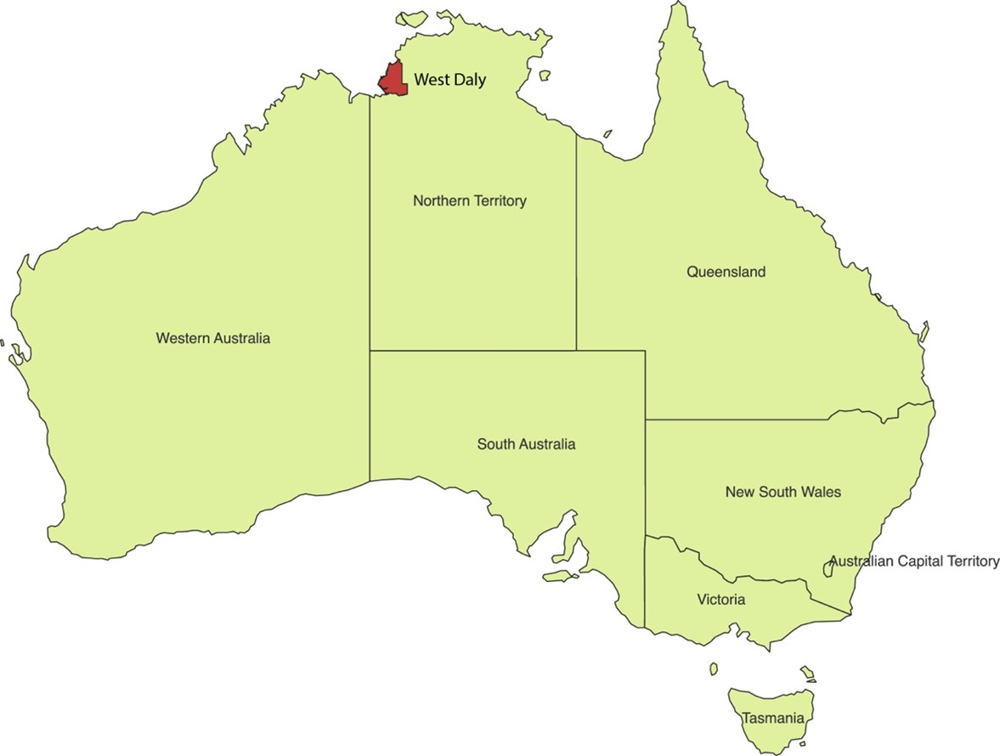

1 Remote sensing data collection
1.1 Define study area
1.2 Collecting bushfire data
Aim
This code is designed to compute and export the annual burned area from the MODIS MCD64A1 dataset using Google Earth Engine (GEE).
Description of steps
- Load the MODIS MCD64A1 burned area dataset from GEE.
- Define a function to clip and export burned area data by year.
- Set a time range (January 1st to December 31st of the given year).
- Filter the dataset for the selected year and extract the burned area information.
- Apply an aggregation method (e.g., mean) to summarize burned area data.
- Clip the data to the Region of Interest (ROI).
- Export the processed burned area data to Google Drive as a GeoTIFF.
- Loop through the desired years (2023-2024) and execute the function.
// Load the MODIS MCD64A1 dataset
var dataset = ee.ImageCollection("MODIS/061/MCD64A1");
// Define a function to clip the dataset and export it by year
function exportYearlyBurnedArea(year) {
// Create a date range for the specific year
var startDate = ee.Date.fromYMD(year, 1, 1);
var endDate = startDate.advance(1, 'year');
// Filter the dataset for the specific year and clip to the ROI
var yearlyBurnedArea = dataset.filterDate(startDate, endDate)
.select('BurnDate')
.mean() // Or use another appropriate aggregation method
.clip(roi.geometry().bounds());
// Export the processed data
Export.image.toDrive({
image: yearlyBurnedArea,
description: 'BurnedArea_' + year,
scale: 500, // Adjust resolution as needed
region: roi,
fileFormat: 'GeoTIFF'
});
}
// Loop through and export data for the years 2000 to 2023
for (var year = 2023; year <= 2024; year++) {
exportYearlyBurnedArea(year);
}The GEE code link: https://code.earthengine.google.com/c4c9731308de7f49c6e468c3daa8cb03 .
1.3 Collecting climate data
- Temperature
Aim
This code is designed to compute and export the annual mean temperature from the ERA5-Land Hourly Temperature dataset using GEE.
Description of steps
- Load ERA5 hourly temperature data from Google Earth Engine.
- Define a function to compute the annual mean temperature.
- Set a time range (January 1st to December 31st of the given year).
- Filter the dataset for the given year and compute the mean temperature.
- Convert temperature from Kelvin to Celsius.
- Clip the data to the ROI.
- Export the processed temperature data to Google Drive as a GeoTIFF.
- Loop through the desired years and execute the function.
// Load the ERA5 daily temperature dataset
var dataset = ee.ImageCollection("ECMWF/ERA5_LAND/HOURLY");
// Define a function to calculate and export the annual mean temperature
function exportYearlyTemperature(year) {
// Create the date range
var startDate = ee.Date.fromYMD(year, 1, 1);
var endDate = startDate.advance(1, 'year');
// Filter the dataset and compute the annual mean temperature (unit: K)
var yearlyTemperature = dataset.filterDate(startDate, endDate)
.select('temperature_2m')
.mean() // Compute annual mean temperature
.subtract(273.15) // Convert to Celsius
.clip(roi.geometry().bounds());
// Export the result to Google Drive
Export.image.toDrive({
image: yearlyTemperature,
description: 'Tem' + year,
scale: 5000, // ERA5 resolution, recommended 5km (5000m)
region: roi,
fileFormat: 'GeoTIFF'
});
}
// Loop to calculate the annual mean temperature for the years 2000-2024
for (var year = 2002; year <= 2002; year++) {
exportYearlyTemperature(year);
}The GEE code link: https://code.earthengine.google.com/5a7f743bb1d0bd174f1d199e26dc4d61 .
- Precipitation
Aim
This code is designed to compute and export the annual cumulative precipitation from the CHIRPS 5-day interval precipitation dataset using GEE.
Description of steps
- Load CHIRPS 5-day interval precipitation data from Google Earth Engine.
- Define a function to compute the annual cumulative precipitation.
- Set a time range (January 1st to December 31st of the given year).
- Filter the dataset for the given year and compute the total precipitation.
- Clip the data** to the ROI.
- Export the processed precipitation data to Google Drive as a GeoTIFF.
- Loop through the desired years (2000-2024) and execute the function.
// Load the CHIRPS dataset (5-day interval precipitation)
var dataset = ee.ImageCollection("UCSB-CHG/CHIRPS/PENTAD");
// Define a function to calculate and export the annual cumulative precipitation
function exportYearlyPrecipitation(year) {
// Create the date range
var startDate = ee.Date.fromYMD(year, 1, 1);
var endDate = startDate.advance(1, 'year');
// Filter the dataset and compute the total precipitation for the year
var yearlyPrecipitation = dataset.filterDate(startDate, endDate)
.select('precipitation')
.sum() // Compute annual total precipitation
.clip(roi.geometry().bounds());
// Export the result to Google Drive
Export.image.toDrive({
image: yearlyPrecipitation,
description: 'Pre' + year,
scale: 5000, // CHIRPS resolution (~5.5 km), adjustable
region: roi,
fileFormat: 'GeoTIFF'
});
}
// Loop to compute annual cumulative precipitation for the years 2000-2024
for (var year = 2000; year <= 2024; year++) {
exportYearlyPrecipitation(year);
}The GEE code link: https://code.earthengine.google.com/e8b09a65c7d506243e0895d7b6af4e41 .